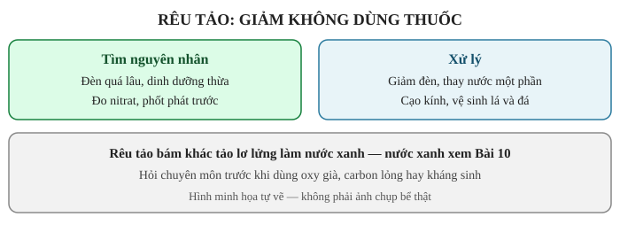

Rêu tảo trong bể: nguyên nhân và cách giảm không dùng thuốc
Tác giả: Ruler
Rêu tảo trong bể cá mới là chuyện thường gặp, không phải dấu hiệu bạn đã thất bại. App-Aquatic viết thẳng trong hướng dẫn về rêu tảo của mình: bể nào cũng có rêu tảo, câu hỏi không phải là bể có rêu tảo hay không, mà là rêu tảo ở mức nào — một lớp màng mỏng trên kính hay đá mà ốc và tôm gặm dần là bình thường, còn rêu tảo phủ kín lá cây, bám thành mảng dày trên đá mới là vấn đề cần xử lý. Mục tiêu của bài này không phải là diệt sạch rêu tảo, mà là đưa bể về mức cân bằng: cây lớn tốt, cá khỏe, rêu tảo chỉ còn ở mức ốc và tôm dọn được.
Bài này viết về rêu tảo bám — rêu tảo mọc trên kính, lá cây, đá, lũa và thiết bị. Nước xanh do tảo lơ lửng trong nước đã được viết đầy đủ ở Nước bể đục trắng, đục xanh: phân biệt màu nước rồi mới xử lý, vì vậy bài này chỉ nhắc tới nước xanh trong bảng nhận diện để bạn phân biệt, không viết lại cách xử lý nước xanh. Ánh sáng và cây thủy sinh đã được viết đầy đủ ở Chọn đèn và cây thủy sinh dễ sống cho bể mới: bắt đầu ít, tăng dần, vì vậy bài này chỉ nhắc ngắn mức đèn 6–8 giờ và nguyên tắc cân bằng ánh sáng — dinh dưỡng — CO2, không viết lại cách chọn đèn hay bảng cây. Nếu bể của bạn đang có nước xanh, hãy đọc Nước bể đục trắng, đục xanh: phân biệt màu nước rồi mới xử lý trước; nếu bạn đang chọn đèn và cây cho bể mới, hãy đọc Chọn đèn và cây thủy sinh dễ sống cho bể mới: bắt đầu ít, tăng dần trước.
Bài này không hướng dẫn dùng thuốc diệt rêu hay thuốc kháng sinh. Với rêu tảo bám, các nguồn mà bài này dựa vào đều thống nhất một điểm: thuốc chỉ xử lý phần rêu tảo đang thấy, còn nguyên nhân làm rêu tảo mọc lại vẫn còn đó. Khi rêu tảo đã bám nặng hoặc cá có dấu hiệu lạ đi kèm, hãy hỏi cửa hàng thủy sinh có kinh nghiệm hoặc bác sĩ thú y chuyên về cá trước khi dùng bất kỳ hóa chất nào.
Nhận diện trước khi xử lý: sáu loại thường gặp
Nhầm loại rêu tảo là lý do thường gặp nhất khiến cách xử lý thất bại. App-Aquatic viết: nhận diện sai là nguyên nhân phổ biến nhất làm các cách xử lý không hiệu quả. AquaCompat tổng hợp sáu loại từ Aquarium Co-Op, GWAPA (hiệp hội cây thủy sinh Washington) và LiveAquaria. Bảng dưới đây tóm tắt cách nhận diện và cách xử lý đầu tiên cho từng loại, đúng như hai nguồn ghi.
| Loại rêu tảo | Nhìn thấy gì | Thường do đâu (theo nguồn) | Cách xử lý đầu tiên |
|---|---|---|---|
| Rêu đốm xanh (green spot) | Chấm xanh cứng trên kính và lá cây lớn chậm, cạo rất khó | Phốt phát mất cân bằng hoặc quá nhiều ánh sáng | Cạo kính bằng dao cạo hoặc thẻ nhựa; ốc nerite gặm được |
| Rêu tóc, rêu sợi (hair/thread) | Sợi xanh dài như tóc ướt, quấn quanh lá cây, đá và đầu lọc | Quá nhiều dinh dưỡng hoặc sắt, quá nhiều ánh sáng | Nhổ bằng tay hoặc quấn vào bàn chải, rút ngắn giờ đèn |
| Rêu nâu (diatoms) | Lớp bụi nâu như bột phủ kính, nền và cây, lau là sạch | Bể mới, silicat và phốt phát trong nước | Lau sạch và chờ bể trưởng thành |
| Rêu râu đen (black beard, BBA) | Chùm đen dày, bám chắc vào lá cây, đồ trang trí và thiết bị | CO2 không ổn định trong bể cây | Xử lý tại chỗ bằng oxy già ngoài nước, cắt lá bị bám nặng |
| Vi khuẩn lam (cyanobacteria) | Mảng nhầy xanh lam, xanh đậm hoặc đỏ, có mùi đất hoặc mùi khó chịu | Nitrat thấp, dòng chảy kém, cho ăn quá nhiều | Hút sạch mảng nhầy, hút cặn nền, tăng dòng chảy |
| Nước xanh (green water) | Cả cột nước chuyển xanh như nước đậu, kính vẫn sạch | Quá nhiều ánh sáng và dinh dưỡng | Đèn UV hoặc tắt đèn hoàn toàn vài ngày — xem Nước bể đục trắng, đục xanh: phân biệt màu nước rồi mới xử lý |
Ba lưu ý khi dùng bảng này. Thứ nhất, rêu nâu trong bể mới là giai đoạn bình thường, không phải bệnh của bể: App-Aquatic viết rêu nâu là loại rêu tảo điển hình của bể mới, chiếm ưu thế trong vài tuần đầu vì silicat trong nước máy và điều kiện ít cạnh tranh, và thường tự hết trong 6–8 tuần khi hệ sinh học trưởng thành. Thứ hai, vi khuẩn lam không phải là tảo thật: App-Aquatic viết dù tên thường gọi là "tảo xanh lam", nó thực ra là vi khuẩn quang hợp, vì vậy cách xử lý nó khác với tảo thật. Thứ ba, rêu râu đen dù có màu đen vẫn thuộc nhóm tảo đỏ, theo AquaCompat dẫn LiveAquaria — màu sắc không cho biết nó thuộc nhóm nào, vì vậy đừng đoán loại rêu tảo chỉ bằng màu.
Nguyên nhân gốc: ánh sáng, dinh dưỡng và sự mất cân bằng

App-Aquatic viết rêu tảo là sinh vật quang hợp cần hai thứ để lớn: ánh sáng và dinh dưỡng. Bể của bạn có cả hai thứ đó dồi dào: ánh sáng từ đèn và có thể từ cửa sổ gần đó, dinh dưỡng từ chất thải của cá, thức ăn thừa, lá cây phân hủy và cả nước máy. AquaCompat viết rêu tảo bùng lên khi ánh sáng, dinh dưỡng và CO2 mất cân bằng, khiến cây không dùng hết những gì đang có — phần thừa đó thuộc về rêu tảo. Khi bạn hiểu đúng nguyên nhân gốc, hầu hết các đợt rêu tảo đều xử lý được bằng ba việc không tốn tiền: cho ăn ít lại, rút ngắn giờ đèn và thay nước.
Ánh sáng: thời gian quan trọng hơn độ sáng
App-Aquatic viết hầu hết bể cây chạy tốt ở 6–8 giờ đèn mỗi ngày, và 10 giờ là quá dài đối với hầu hết các bể. Ánh nắng trực tiếp qua cửa sổ là nguyên nhân chắc chắn gây rêu tảo: nó thêm ánh sáng mạnh không kiểm soát được, phá vỡ mọi kỷ luật về giờ đèn mà bạn đã đặt bằng hẹn giờ. AquaCompat dẫn Tropica: khoảng 6 giờ đèn mỗi ngày trong hai tới ba tuần đầu của bể cây mới, rồi 8–10 giờ mỗi ngày khi cây đã ổn định; Aquarium Co-Op cho phép bể đã ổn định bật đèn lâu hơn, nhưng khuyên giảm giờ đèn nếu rêu tảo lan ra. Chọn đèn và cây thủy sinh dễ sống cho bể mới: bắt đầu ít, tăng dần đã viết chi tiết về cách chọn đèn và giờ đèn cho bể mới; bài này chỉ nhắc lại con số 6–8 giờ làm điểm khởi đầu, và khuyên bạn dùng hẹn giờ để giờ đèn giống nhau mỗi ngày. Giờ đèn thay đổi thất thường cũng nuôi rêu tảo, vì vậy đừng bật đèn bằng tay theo cảm hứng.
Một lỗi người mới hay mắc là tăng độ sáng của đèn để cây lớn nhanh hơn, rồi thắc mắc vì sao rêu tảo bùng lên. App-Aquatic viết tăng cường độ sáng mà không bổ sung CO2 và không có đủ cây khỏe chỉ làm rêu tảo lớn nhanh hơn. Nếu cây của bạn không lớn tốt, hãy sửa dinh dưỡng và CO2 trước khi tăng đèn, vì cây yếu không dùng hết ánh sáng, và phần ánh sáng thừa đó thuộc về rêu tảo.
Dinh dưỡng: cho ăn quá nhiều là thủ phạm lớn nhất
App-Aquatic viết mọi vụn thức ăn không được ăn hết chìm xuống nền sẽ phân hủy thành amoniac, rồi thành nitrat và phốt phát — và đó là phân bón trực tiếp cho rêu tảo. Nguồn này khuyên chỉ cho lượng cá ăn hết trong 2–3 phút, một tới hai lần mỗi ngày, và hút cặn nền khi thay nước. Đây là cùng một quy tắc đã viết đầy đủ ở Cho cá cảnh ăn đúng cách: bao nhiêu, mấy lần và lỗi thường gặp; bài này chỉ nhắc ngắn, không viết lại toàn bộ quy tắc cho ăn. App-Aquatic viết nitrat trên 40 ppm kéo dài, hoặc bất kỳ lượng phốt phát đo được nào, đều là dấu hiệu sớm cho thấy lượng dinh dưỡng đưa vào đang vượt lượng bạn lấy ra. AquaCompat dẫn Aquarium Co-Op: nitrat dưới khoảng 40 ppm là an toàn, và Practical Fishkeeping viết nitrat cao hơn nhiều so với nước máy thì cần thay nước nhiều hơn, vì thay nước là cách chính để loại nitrat ra khỏi bể.
Phân bón cho cây cũng có thể nuôi rêu tảo nếu bón quá tay. AquaCompat viết bón phân quá nhiều vào nước là một con đường gây rêu tảo, vì cây không hấp thụ phân nhanh hơn mức ánh sáng cho phép. Chọn đèn và cây thủy sinh dễ sống cho bể mới: bắt đầu ít, tăng dần đã viết bón phân nhẹ một lần mỗi tuần cho bể cây ít kỹ thuật, và chờ 3–4 tuần đầu mới bón phân vì cây mới mua về đã mang theo chất dinh dưỡng dự trữ. Nếu bạn vừa bón phân vừa bật đèn 10 giờ mỗi ngày trong bể cây ít, rêu tảo gần như chắc chắn sẽ tới trước cây.
CO2 và cây: rêu tảo thắng khi cây không dùng hết phần thừa
Nguyên tắc này đã được viết ở Chọn đèn và cây thủy sinh dễ sống cho bể mới: bắt đầu ít, tăng dần, nhưng cần nhắc lại ở đây vì nó giải thích vì sao rêu râu đen xuất hiện. AquaCompat viết cây và rêu tảo cạnh tranh cùng ánh sáng, dinh dưỡng và CO2: ánh sáng quá nhiều so với dinh dưỡng, hoặc dinh dưỡng quá nhiều so với ánh sáng, đều làm rêu tảo lấy phần thừa. Trong bể không bơm CO2 của người mới, rêu râu đen ít liên quan tới CO2 bơm vào, mà liên quan nhiều hơn tới chất hữu cơ tích tụ và dòng chảy không đều quanh lá cây lớn chậm. Trong bể có bơm CO2, AquaCompat dẫn GWAPA: rêu râu đen gắn với CO2 không ổn định — bật CO2 lệch giờ so với đèn, lưu lượng bọt thay đổi, hoặc mặt nước động quá mạnh làm CO2 thoát ra trước khi cây dùng được. Bài này không hướng dẫn bơm CO2, vì bể đầu tiên của người mới trong website này là bể không bơm CO2; nếu bể của bạn đã bơm CO2 và rêu râu đen xuất hiện, hãy kiểm tra lịch CO2 và đèn có chạy cùng hẹn giờ không, rồi hỏi cửa hàng thủy sinh trước khi đổi liều CO2.
Từng loại rêu tảo bám: xử lý theo loại, không xử lý chung một cách
Rêu nâu: lau sạch và chờ bể trưởng thành
Rêu nâu là loại dễ xử lý nhất, và cũng là loại người mới hay xử lý quá tay nhất. AquaCompat viết rêu nâu thường mờ dần khi bể mới trưởng thành và silicat cùng phốt phát được dùng hết; trong lúc chờ, hãy lau bằng bọt biển. App-Aquatic viết nếu rêu nâu còn dai dẳng trong bể đã ổn định, hãy kiểm tra silicat trong nước và cân nhắc vật liệu lọc loại silicat. Bài này khuyên bạn đừng mua vật liệu loại silicat hay thuốc xử lý chỉ vì rêu nâu xuất hiện trong tháng đầu: cách xử lý rêu nâu chủ yếu là thời gian, lau bề mặt khi thay nước, giữ giờ đèn vừa phải và để hệ thống trưởng thành. App-Aquatic viết rêu nâu thường tự hết trong 6–8 tuần khi hệ sinh học trưởng thành, và AquaCompat viết rêu nâu mờ dần khi bể trưởng thành và silicat cùng phốt phát được dùng hết. Ốc nerite, cá oto và tôm đều gặm rêu nâu, nhưng đừng mua cả đàn ốc chỉ để dọn rêu nâu trong bể mới: rêu nâu sẽ tự hết khi bể ổn định, và ốc mua về vẫn cần ăn sau khi rêu nâu hết.
Rêu đốm xanh: cạo kính, và đừng vội kết luận về phốt phát
Rêu đốm xanh là những chấm xanh cứng bám chắc trên kính và lá cây lớn chậm như ráy. AquaCompat viết cạo kính bằng dao cạo, hoặc thẻ nhựa nếu bể là mica, và ốc nerite ăn được loại rêu tảo này. Điểm khó của rêu đốm xanh là các nguồn không thống nhất về nguyên nhân của nó: AquaCompat viết GWAPA cho rằng phốt phát cạn kiệt là nguyên nhân và gợi ý tăng phốt phát trong bể cây, trong khi LiveAquaria liệt kê phốt phát cao, quá nhiều ánh sáng hoặc CO2 thấp. Hai hướng xử lý này ngược nhau — một bên bảo tăng phốt phát, một bên bảo phốt phát cao là nguyên nhân — vì vậy bài này khuyên bạn đừng tự tăng hay giảm phốt phát chỉ vì đọc được một trong hai ý kiến đó. Hãy làm hai việc chắc chắn trước: cạo kính và rút ngắn giờ đèn xuống 6 giờ trong hai tuần, rồi đo nitrat và phốt phát bằng bộ test trước khi thay đổi bất kỳ liều phân bón nào. Nếu rêu đốm xanh chỉ bám trên kính và không lan sang lá cây, hãy lau kính mỗi lần thay nước và coi đó là việc bảo trì thường xuyên, không phải là vấn đề cần chữa.
Rêu tóc, rêu sợi: nhổ bằng tay trước, rồi mới sửa nguyên nhân
Rêu tóc là những sợi xanh dài như tóc ướt, quấn quanh lá cây, đá và đầu lọc. AquaCompat viết nhổ bằng tay hoặc bằng bàn chải, rút ngắn giờ đèn và cân bằng lại phân bón; GWAPA gắn loại rêu tảo này với sắt trên khoảng 0,15 ppm. App-Aquatic viết nguyên nhân gần như luôn là quá nhiều ánh sáng kết hợp với mất cân bằng dinh dưỡng — thường là nitrat cao, đôi khi là phốt phát tăng. Bài này không chọn một nguyên nhân duy nhất, vì các nguồn đã không thống nhất: GWAPA nói sắt, LiveAquaria nói nitrat và phốt phát, Aquarium Co-Op nói dinh dưỡng thừa, quá nhiều ánh sáng hoặc quá ít dinh dưỡng. Cách xử lý thực tế không phụ thuộc vào việc bạn chọn đúng nguyên nhân nào trong ba ý kiến đó: nhổ rêu tóc bằng tay hoặc quấn vào bàn chải đánh răng, rút ngắn giờ đèn xuống 6 giờ, giảm cho ăn về một lần mỗi ngày với lượng nhỏ, và thay nước 30–40% hai lần mỗi tuần cho tới khi số đo ổn định. App-Aquatic viết tổ hợp này giải quyết hầu hết các đợt rêu tảo thông thường trong 2–4 tuần mà không cần thêm chất gì. Tôm Amano ăn rêu tóc rất tốt, theo cả hai nguồn, nhưng đừng mua tôm chỉ để dọn rêu tóc trong khi đèn vẫn bật 10 giờ và bạn vẫn cho ăn quá nhiều: tôm dọn phần rêu tảo đang thấy, không dọn nguyên nhân làm rêu tóc mọc lại.
Rêu râu đen: loại cứng đầu nhất, cần kiên nhẫn tính bằng tháng
Rêu râu đen là những chùm đen dày, bám chắc vào mép lá cây lớn chậm, lũa, đá và viền thiết bị, sờ hơi ráp. App-Aquatic viết đây là một trong những loại rêu tảo cứng đầu nhất trong thú chơi cá cảnh, gắn chặt với CO2 dao động, dù chất hữu cơ tích tụ cũng quan trọng. AquaCompat viết cách xử lý tại chỗ: phun oxy già 3% lên đồ trang trí hoặc cây đã lấy ra khỏi nước, để khoảng năm phút, rửa sạch rồi cho lại vào bể, và cắt bỏ lá bị bám nặng. Aquarium Co-Op cảnh báo việc diệt sạch hoàn toàn có thể mất sáu tới tám tháng. App-Aquatic viết cách xử lý bằng carbon lỏng tại chỗ: tắt lọc, bơm trực tiếp lên vùng bị bám bằng ống tiêm, chờ 5–10 phút rồi mới bật lại dòng chảy; rêu râu đen chuyển sang màu hồng đỏ trong một tới hai ngày rồi tôm gặm dần hoặc chết đi, và thường cần nhiều lần xử lý trong 2–3 tuần.
Bài này không hướng dẫn bạn tự pha hay tự định liều oxy già hay carbon lỏng trong bể đang có cá, vì liều dùng phụ thuộc vào thể tích bể, loài cá và loài cây trong bể. App-Aquatic cũng viết liều oxy già tại chỗ cho bể có cá là dung dịch 3%, 1–2 mL cho mỗi 10 lít nước, bơm trực tiếp khi đã tắt lọc, và oxy già phân hủy nhanh thành nước và oxy. Bài này trích con số đó đúng như nguồn ghi, nhưng khuyên bạn hỏi cửa hàng thủy sinh trước khi dùng lần đầu, nhất là khi bể có tôm hoặc ốc: AquaCompat viết không có nguồn nào trong dữ liệu của họ nói về độ an toàn của oxy già hay carbon lỏng với tôm và ốc, vì vậy hãy lấy đồ trang trí bị bám ra khỏi bể để xử lý, rửa sạch rồi mới cho lại vào bể có động vật không xương sống. Trong bể không bơm CO2 của người mới, cách giảm rêu râu đen bền nhất không phải là thuốc, mà là giảm ánh sáng và dinh dưỡng thừa, hút cặn nền kỹ, và cắt bỏ lá bị bám nặng thay vì cố lau sạch lá đó.
Vi khuẩn lam: hút sạch, tăng dòng chảy, và đừng để lâu
Vi khuẩn lam tạo thành mảng nhầy xanh lam, xanh đậm hoặc đỏ, có mùi đất hoặc mùi khó chịu, lan trên nền, cây, đá và thiết bị. App-Aquatic viết nó phát triển mạnh ở vùng dòng chảy yếu, dinh dưỡng cao, và thường xuất hiện khi nitrat thấp nhưng chất thải hữu cơ cao — điều này làm nhiều người bối rối vì họ đo nitrat và thấy số "tốt". Cách xử lý đầu tiên là hút sạch mảng nhầy, hút cặn nền kỹ, tăng dòng chảy vào vùng nước đọng, và tắt đèn hoàn toàn trong 3 ngày. App-Aquatic viết thêm một cảnh báo quan trọng: vi khuẩn lam có thể tạo ra chất độc gây hại cho cá và động vật không xương sống nếu để bùng phát mạnh, vì vậy đừng để một đợt vi khuẩn lam kéo dài nhiều tuần với hy vọng nó tự hết.
Với trường hợp dai dẳng, các nguồn nhắc tới thuốc kháng sinh như erythromycin, nhưng bài này không hướng dẫn dùng kháng sinh. AquaCompat viết UF/IFAS cảnh báo tắm kháng sinh có thể làm hại lọc sinh học, và khuyên đo amoniac và nitrit trong và sau khi dùng erythromycin. App-Aquatic viết erythromycin nên là lựa chọn cuối cùng vì nó ảnh hưởng cả vi khuẩn có lợi — và bạn nên tính trước việc chạy lọc lại sau đó. Nếu vi khuẩn lam quay lại sau khi bạn đã hút sạch, tăng dòng chảy và tắt đèn 3 ngày, hãy hỏi bác sĩ thú y chuyên về cá trước khi dùng bất kỳ thuốc kháng sinh nào, vì liều dùng và ảnh hưởng tới lọc sinh học cần được cân nhắc theo từng bể.
Cách giảm rêu tảo không dùng thuốc, theo thứ tự
Các nguồn mà bài này dựa vào đều thống nhất một trình tự xử lý. Làm theo thứ tự này, đừng nhảy thẳng tới bước mua thuốc hay mua thêm cá dọn rêu.
Bước 1 — Dọn bằng tay trước. App-Aquatic viết trước hết hãy dọn sạch bằng tay càng nhiều càng tốt: cạo kính bằng dao cạo hoặc dụng cụ lau kính từ tính, nhổ rêu tóc bằng tay hoặc bàn chải, cắt bỏ lá cây bị bám nặng thay vì cố lau sạch lá đó. Việc dọn bằng tay lấy đi cả khối rêu tảo và lượng dinh dưỡng bị khóa trong đó. Luôn thay nước sau khi dọn bằng tay để đưa phần rêu tảo đã rời ra khỏi bể.
Bước 2 — Giảm ánh sáng và dinh dưỡng cùng lúc. App-Aquatic viết cắt giờ đèn xuống 6 giờ tạm thời trong lúc rêu tảo bùng phát, giảm cho ăn xuống một lần mỗi ngày với lượng nhỏ, thay nước 30–40% hai lần mỗi tuần cho tới khi số đo ổn định, và hút cặn nền mỗi lần thay nước. Đây là phác đồ tạm thời khi rêu tảo đang bùng phát, không phải lịch thay nước thường kỳ 10%/tuần hoặc 25%/2 tuần ở Thay nước cho bể cá đúng cách: bao nhiêu, bao lâu và lỗi thường gặp. AquaCompat viết thêm: dùng hẹn giờ cho đèn, để bể tránh ánh nắng trực tiếp, và thay đổi liều phân bón từ từ, chờ hai tới ba tuần giữa các lần điều chỉnh. Đừng thay đổi nhiều thứ cùng một lúc rồi kết luận thứ nào có tác dụng: nếu bạn vừa giảm đèn, vừa đổi phân bón, vừa mua thêm ốc trong cùng một tuần, bạn sẽ không biết thứ nào đã giúp bể sạch lại.
Bước 3 — Thêm cây lớn nhanh để cây dùng dinh dưỡng thừa trước rêu tảo. App-Aquatic viết cây lớn nhanh cạnh tranh dinh dưỡng với rêu tảo tốt hơn cây lớn chậm: rong đuôi chồn, rong đuôi chó xoắn, dương xỉ nước hoặc cây nổi đều dùng dinh dưỡng thừa trước rêu tảo. Chọn đèn và cây thủy sinh dễ sống cho bể mới: bắt đầu ít, tăng dần đã viết bảng 10 cây dễ sống không cần CO2 và cách trồng từng nhóm; bài này chỉ nhắc lại nguyên tắc: bể ít cây mà đèn sáng thì phần thừa thuộc về rêu tảo, còn bể nhiều cây lớn nhanh thì phần thừa thuộc về cây. Đừng mua cây cần nhiều CO2 về trồng trong bể không bơm CO2 rồi mong cây thắng rêu tảo — cây đó sẽ lớn chậm và rêu tảo vẫn thắng.
Bước 4 — Dùng đội dọn rêu làm bảo trì, không làm thuốc chữa. App-Aquatic viết tôm Amano là loài gặm rêu tảo hiệu quả nhất trong nước ngọt — một nhóm 6–10 con trong bể vừa làm rêu tóc và rêu mềm giảm rõ rệt. Ốc nerite giỏi nhất với rêu tảo trên kính và bề mặt cứng, và không sinh sản trong nước ngọt. Cá oto gặm rêu nâu và màng xanh trên lá mà không làm hại cây. AquaCompat bổ sung: tôm Amano lớn tới 2 inch (5,1 cm) và cần ít nhất 10 gallon Mỹ (38 lít); ốc nerite cần nước pH 7,2–8,0. Cá ăn rêu Xiêm thật (Crossocheilus oblongus, không phải cá cáo bay giống nó) ăn cả rêu râu đen khi còn nhỏ, nhưng thường lười hơn khi lớn lên. Không loài nào trong số này sửa được nguyên nhân gốc: App-Aquatic viết bể nuôi quá nhiều cá, cho ăn quá nhiều hoặc bật đèn quá lâu sẽ tạo ra rêu tảo nhanh hơn bất kỳ đội dọn rêu nào dọn được. AquaCompat viết cá chuột không phải là loài ăn rêu tảo chính, và cá pleco mũi gai vẫn cần thức ăn thực vật ngoài rêu tảo tìm được trong bể. Đừng mua quá nhiều cá dọn rêu: App-Aquatic viết 6 con tôm Amano trong bể 60 lít tạo ra khác biệt rõ rệt, còn 20 con trong cùng bể chỉ thêm chất thải và tranh thức ăn mà không dọn nhanh hơn. Đội dọn rêu cũng cần ăn sau khi rêu tảo hết — một bể sạch bóng có thể làm ốc nerite thiếu thức ăn, theo Practical Fishkeeping qua AquaCompat.
Những thứ không nên làm khi bể có rêu tảo
- Đừng mua thuốc diệt rêu ngay khi thấy rêu tảo. Thuốc diệt phần rêu tảo đang thấy, không sửa nguyên nhân. Chọn đèn và cây thủy sinh dễ sống cho bể mới: bắt đầu ít, tăng dần đã viết: chỉ sau khi đã giảm giờ đèn, che nắng, thay nước và thêm cây lớn nhanh mà rêu tảo vẫn không giảm, hãy hỏi cửa hàng thủy sinh về thuốc diệt rêu — và đừng dùng thuốc trong khi đèn vẫn bật quá lâu và bạn vẫn cho ăn quá nhiều.
- Đừng tắt đèn hoàn toàn trong nhiều ngày cho mọi loại rêu tảo. Tắt đèn 3 ngày có tác dụng với nước xanh và vi khuẩn lam, theo App-Aquatic. Với rêu râu đen bám trên lá, tắt đèn không phải cách xử lý — cách xử lý là cắt lá bị bám nặng và sửa nguyên nhân, như phần kết luận của bài này đã viết. AquaCompat viết tắt đèn và dùng kháng sinh đều gây hại cho cây sống.
- Đừng chạy theo vật liệu loại silicat hay thuốc xử lý chỉ vì rêu nâu trong bể mới. Rêu nâu tự hết trong 6–8 tuần khi bể trưởng thành; tiền mua vật liệu xử lý không làm bể trưởng thành nhanh hơn.
- Đừng tăng độ sáng của đèn để cây lớn nhanh hơn. Ánh sáng thừa khi cây chưa dùng hết sẽ thuộc về rêu tảo, như đã viết ở mục nguyên nhân.
- Đừng thay toàn bộ vật liệu lọc cùng lúc để "dọn sạch" bể. Vệ sinh lọc và nền bể không làm mất vi khuẩn có lợi đã viết rửa lọc đúng cách là rửa bằng nước lấy từ bể và không vệ sinh hết lọc và nền trong cùng một lần; thay toàn bộ vật liệu lọc làm mất vi khuẩn trong lọc và có thể làm nước đục trở lại, như Nước bể đục trắng, đục xanh: phân biệt màu nước rồi mới xử lý đã viết.
- Đừng mua thêm cá dọn rêu khi bể đã nuôi quá nhiều cá. Thêm cá là thêm chất thải, và chất thải là dinh dưỡng cho rêu tảo.
Khi nào rêu tảo trở thành nguy hiểm cho cá
Hầu hết rêu tảo bám không gây hại trực tiếp cho cá. AquaCompat viết rêu tảo tự nó không phải là bệnh của cá, nhưng khi rêu tảo nở hoa dày đặc, nó tiêu thụ oxy vào ban đêm. Dữ liệu của Trung tâm Nuôi trồng Thủy sản Khu vực phía Nam (SRAC), qua AquaCompat, cho thấy rêu tảo nở hoa dày có thể làm cá stress hoặc ngạt thở, và vi khuẩn lam nằm trong số những loại tảo tạo độc tố thường gặp nhất trong ao nước ngọt. Bài này không khẳng định mức độc tố đó áp dụng cho bể cá cảnh ở mức nào, vì AquaCompat cũng viết mức độ áp dụng cho bể cá chưa được định lượng. Dấu hiệu cần hành động ngay là cá ngoi lên mặt nước thở gấp trong lúc rêu tảo đang dày, nhất là vào buổi sáng sau một đêm rêu tảo dùng oxy: hãy bật sủi khí, nâng đầu ra của lọc lên gần mặt nước, đo amoniac, nitrit và hỏi bác sĩ thú y chuyên về cá. Nước bể đục trắng, đục xanh: phân biệt màu nước rồi mới xử lý đã viết dấu hiệu này cho trường hợp nước đục; nó cũng đúng cho trường hợp rêu tảo dày.
Phòng rêu tảo quay lại: giữ ổn định thay vì dọn dẹp liên tục
Phòng rêu tảo quay lại không cần thêm sản phẩm nào, mà cần giữ ổn định ba thứ: ánh sáng, dinh dưỡng và cây. AquaCompat viết phòng ngừa là giữ đèn ổn định, dinh dưỡng ổn định và nhiều cây: dùng hẹn giờ cho đèn, để bể tránh ánh nắng trực tiếp, và thay đổi liều phân bón từ từ, chờ hai tới ba tuần giữa các lần điều chỉnh. Tropica, qua AquaCompat, gợi ý bón rất ít hoặc không bón phân trong 3–4 tuần đầu của bể cây mới. App-Aquatic viết rêu tảo trong bể đã ổn định gần như luôn bắt nguồn từ một thay đổi trong thói quen — một kỳ nghỉ có người cho ăn quá nhiều, một hẹn giờ đèn bị đặt lại, một lần bỏ qua vệ sinh lọc khi chuyển nhà. Ghi lại số đo nước và giờ đèn vào sổ theo dõi bể, như mẫu nhật ký trong phụ lục của website, sẽ làm những thay đổi đó hiện ra rõ ràng trước khi chúng thành đợt rêu tảo.
Một lịch bảo trì đơn giản cho bể 60 lít của người mới, tổng hợp từ các bài trước: mỗi tuần thay nước 10% hoặc 25% mỗi hai tuần theo Thay nước cho bể cá đúng cách: bao nhiêu, bao lâu và lỗi thường gặp, hút nhẹ cặn nền, lau kính trước khi rêu đốm xanh bám cứng, cho ăn theo quy tắc 2–3 phút ở Cho cá cảnh ăn đúng cách: bao nhiêu, mấy lần và lỗi thường gặp, và giữ đèn ở 6–8 giờ mỗi ngày bằng hẹn giờ theo Chọn đèn và cây thủy sinh dễ sống cho bể mới: bắt đầu ít, tăng dần. Mỗi tháng kiểm tra lại lọc theo Vệ sinh lọc và nền bể không làm mất vi khuẩn có lợi và xem cây nào lớn tốt, cây nào vàng lá. Khi rêu tảo xuất hiện trở lại, hãy hỏi ba câu theo thứ tự: giờ đèn có thay đổi không, có ai cho ăn nhiều hơn không, và lần thay nước gần nhất là khi nào. Trong hầu hết các trường hợp, câu trả lời nằm trong ba câu hỏi đó.
Checklist xử lý rêu tảo bám trong 15 phút
Khi thấy rêu tảo bám, hãy làm theo checklist này theo thứ tự, ghi lại kết quả, rồi mới quyết định bước tiếp theo. Đừng mua thuốc diệt rêu trước khi làm xong checklist.
- Nhìn kỹ và sờ thử: chấm cứng hay mảng mềm, sợi dài hay chùm đen, có mùi khó chịu không. Ghi loại rêu tảo theo bảng nhận diện ở đầu bài.
- Đo nitrat và phốt phát, ghi con số và giờ đo. Nitrat trên 40 ppm kéo dài là dấu hiệu dinh dưỡng thừa.
- Kiểm tra giờ đèn và vị trí bể: đèn bật bao nhiêu giờ mỗi ngày, bể có nhận nắng từ cửa sổ không, hẹn giờ có bị đặt lại không.
- Nhớ lại ba việc gần nhất: bạn cho ăn nhiều hơn không, bạn bón phân gần đây không, bạn thay hoặc rửa vật liệu lọc khi nào.
- Dọn bằng tay: cạo kính, nhổ rêu tóc bằng bàn chải, cắt lá bị bám nặng, rồi thay nước một phần.
- Giảm giờ đèn xuống 6 giờ trong hai tuần, giảm cho ăn xuống một lần mỗi ngày với lượng nhỏ.
- Nếu là rêu nâu trong bể mới: lau sạch và chờ bể trưởng thành, đừng mua vật liệu xử lý.
- Nếu là rêu râu đen: cắt lá bị bám nặng, hút cặn nền kỹ, hỏi cửa hàng thủy sinh trước khi dùng oxy già hay carbon lỏng tại chỗ.
- Nếu là vi khuẩn lam: hút sạch mảng nhầy, hút cặn nền, tăng dòng chảy vào vùng nước đọng, tắt đèn 3 ngày; đừng để kéo dài nhiều tuần.
- Ghi lại những gì bạn đã làm và ngày làm, rồi kiểm tra lại sau hai tuần. Nếu rêu tảo vẫn không giảm sau khi đã giảm đèn, giảm cho ăn và thay nước đều đặn, hãy mang sổ ghi chép tới cửa hàng thủy sinh hoặc hỏi bác sĩ thú y chuyên về cá.
Kết luận
Rêu tảo bám không phải là kẻ thù cần diệt sạch, mà là tín hiệu cho biết bể của bạn đang mất cân bằng ở đâu. Rêu nâu trong bể mới thường tự hết trong 6–8 tuần khi bể trưởng thành. Rêu đốm xanh cứng đầu trên kính thì cạo sạch và rút ngắn giờ đèn, đừng vội kết luận về phốt phát vì các nguồn không thống nhất về nguyên nhân của nó. Rêu tóc thì nhổ bằng tay, giảm đèn xuống 6 giờ và giảm cho ăn. Rêu râu đen là loại cứng đầu nhất, có thể mất sáu tới tám tháng mới diệt sạch hoàn toàn, vì vậy hãy cắt lá bị bám nặng và sửa nguyên nhân thay vì tìm thuốc diệt nhanh. Vi khuẩn lam không phải là tảo thật, cần hút sạch, tăng dòng chảy và tắt đèn 3 ngày, và đừng để kéo dài vì nó có thể tạo chất độc. Đội dọn rêu — tôm Amano, ốc nerite, cá oto — chỉ làm nhiệm vụ bảo trì, không sửa được nguyên nhân gốc. Cách giảm rêu tảo bền nhất không tốn tiền vẫn là ba việc cũ: cho ăn vừa đủ theo quy tắc 2–3 phút, giữ đèn ở 6–8 giờ mỗi ngày bằng hẹn giờ, và thay nước đều đặn. Khi ba việc đó đã ổn định, rêu tảo sẽ chỉ còn ở mức ốc và tôm dọn được.
Nguồn tham khảo
- App-Aquatic, "Algae 101 | Aquarium Algae Types & Treatments" — năm loại rêu tảo thường gặp; rêu nâu tự hết trong 6–8 tuần; đèn 6–8 giờ mỗi ngày, 10 giờ là quá dài; nitrat trên 40 ppm là dấu hiệu sớm; thay nước 30–40% hai lần mỗi tuần, rêu tảo thường hết trong 2–4 tuần; tôm Amano 6–10 con trong bể vừa, ốc nerite, cá oto, cá ăn rêu Xiêm thật; oxy già 3% liều 1–2 mL cho mỗi 10 lít nước khi xử lý tại chỗ; erythromycin là lựa chọn cuối cùng (truy cập 23/11/2026): https://app-aquatic.com/guide-algae.html
- AquaCompat, "Aquarium Algae: Types, Causes and Treatment" — sáu loại rêu tảo, bảng nhận diện và cách xử lý đầu tiên theo Aquarium Co-Op, GWAPA và LiveAquaria; các nguồn không thống nhất về nguyên nhân rêu đốm xanh (GWAPA nói phốt phát thấp, LiveAquaria nói phốt phát cao) và rêu tóc (GWAPA nói sắt trên 0,15 ppm, LiveAquaria nói nitrat và phốt phát); nitrat dưới khoảng 40 ppm là an toàn theo Aquarium Co-Op; rêu râu đen xử lý bằng oxy già 3% ngoài nước trong khoảng năm phút, diệt sạch hoàn toàn có thể mất sáu tới tám tháng; tôm Amano 2 inch (5,1 cm), cần ít nhất 10 gallon Mỹ (38 lít); ốc nerite cần pH 7,2–8,0; Tropica gợi ý 6 giờ đèn mỗi ngày trong hai tới ba tuần đầu rồi 8–10 giờ; chờ hai tới ba tuần giữa các lần điều chỉnh phân bón (truy cập 23/11/2026): https://aquacompat.com/diseases/algae/
- RSPCA, "Choosing an Aquarium for Pet Fish" — chu kỳ đèn 8–10 giờ mỗi ngày, tắt vào ban đêm, không đặt bể cạnh cửa sổ; amoniac và nitrit an toàn ở 0 mg/L (đã mở trực tiếp trong các bài trước của website này, nước bể đục trắng, đục xanh: phân biệt màu nước rồi mới xử lý và chọn đèn và cây thủy sinh dễ sống cho bể mới: bắt đầu ít, tăng dần) (truy cập 23/11/2026): https://science.rspca.org.uk/en/web/rspca/adviceandwelfare/pets/fish/environment